X
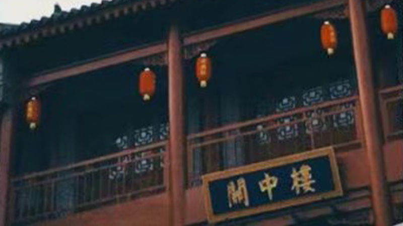
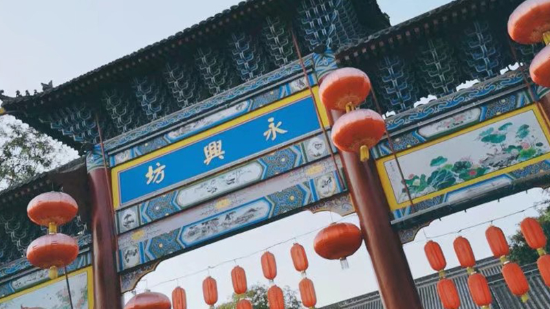
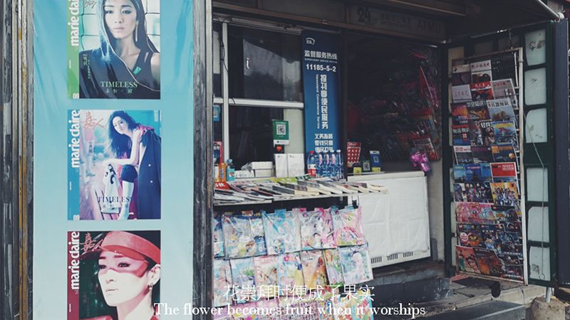
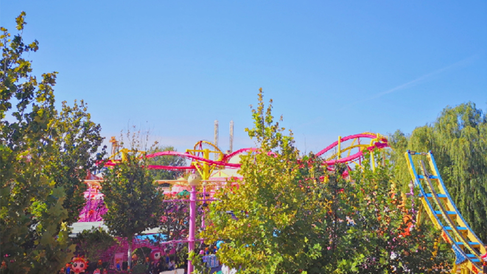
an
西安，古称长安、镐京，陕西省会、副省级市，是世界历史名城、中国四大古都之一、中华文明和中华民族重要发祥地，是国家重要的科研、教育、工业基地，亦是丝绸之路起点城市、“一带一路”核心区。著名景点：大唐芙蓉园、大雁塔、秦兵马俑、骊山、华清池、回民街、陕西省历史博物馆等。
Beiji
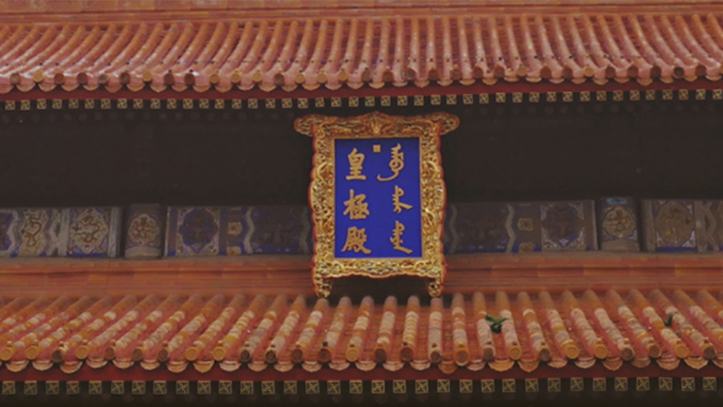
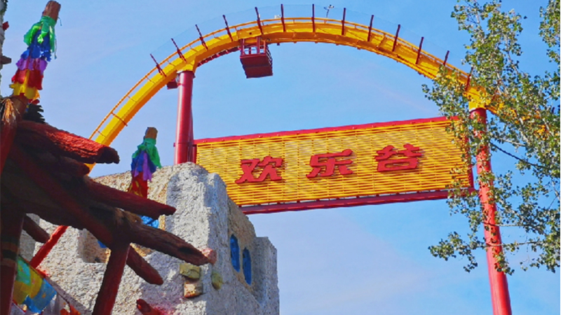
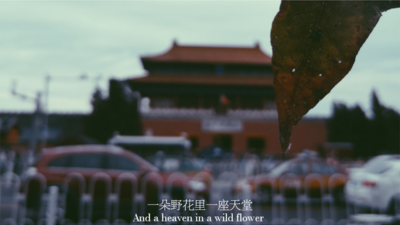
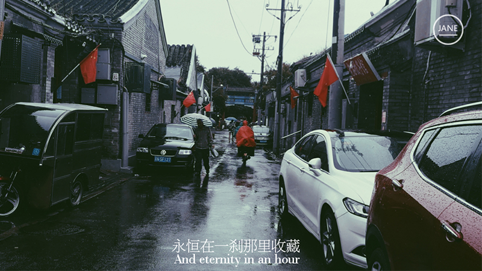
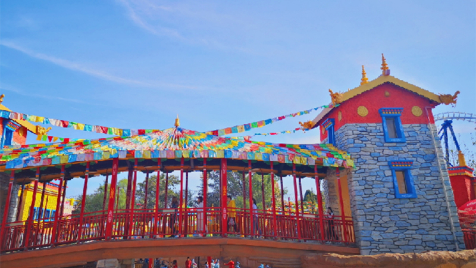
g
北京位于华北平原北部，背靠燕山，毗邻天津和河北，总面积16410.54平方千米。七十万年前周口店地区出现北京猿人。公元前1045年是蓟、燕等诸侯国都城。公元938年以来成为辽陪都、金中都、元大都、明清国都。1949年10月1日成为中华人民共和国首都。景点推荐：天安门广场、故宫、颐和园、八达岭长城、明十三陵、红砖博物馆、铁道博物馆。
W
han
湖北省省会。华中地区最大都市及中心城市。中国长江中下游特大城市。世界第三大河长江及其最长支流汉江横贯市区，将武汉一分为三，形成了武昌、汉口、汉阳三镇隔江鼎立的格局。唐朝诗人李白曾写下”黄鹤楼中吹玉笛，江城五月落梅花“，因此武汉又称”江城“。景点众多，欢迎探索。
Nan
 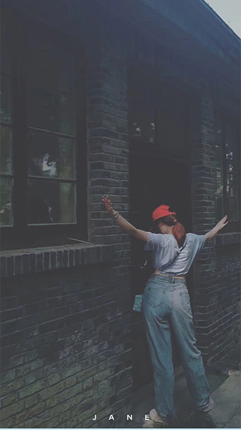
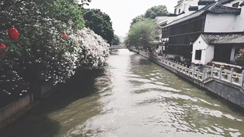
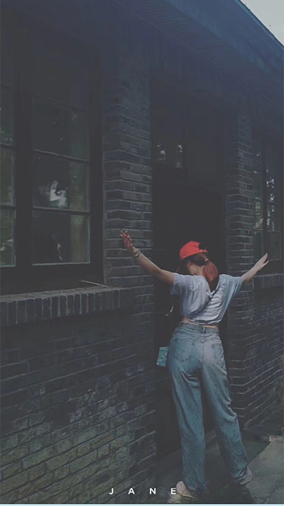
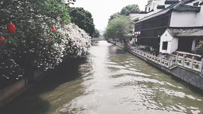
ing
南京，简称“宁”，古称金陵、建康，是江苏省会、副省级市、特大城市、南京都市圈核心城市，国务院批复确定的中国东部地区重要的中心城市、全国重要的科研教育基地和综合交通枢纽。推荐景点：侵华日军南京大屠杀遇难同胞纪念馆、南京德云社、总统府、中山陵等。